How does the model acquire long-horizon planning during pre-training through world-model internalization, atomic-skill composition, and trajectory quality?
Abstract
Where does long-horizon planning come from?
Multi-turn long-horizon planning is critical for foundation-model agents, yet uncontrollable and opaque Internet data makes it difficult to identify how this ability is acquired, shaped, and integrated. Our unified environment precisely controls task length, data quality, planning knowledge, and planning patterns across three training stages.
Acquisition. Explicit chain-of-thought state-transition modeling generalizes better than direct action prediction. Atomic skills alone do not compose reliably, while even limited long-horizon data unlocks longer planning. Suboptimal trajectories are especially damaging because decision errors accumulate across the horizon.
Shaping. Planning patterns and task-specific planning knowledge have different mutual-information structure. OPD provides more consistent directions and a broader effective region than sparse-reward GRPO under long horizons and weaker pre-training, but forcing unseen procedural knowledge can damage the student’s existing world model.
Integration. MOPD consolidates abilities by converging toward shared planning-pattern distributions. Compatible patterns enable cross-environment generalization, partially shared patterns support continual learning, and fully conflicting patterns cause interference and catastrophic forgetting.
Multi-turnLong-horizonAgentic planning
RLOPDMOPD
A Core Question for Multi-Turn Long-Horizon Planning
How can we fundamentally improve the long-horizon planning ability of foundation models at different training stages?
Three Basic Sub-questions for Multi-Turn Long-Horizon Planning
How does RL shape long-horizon planning, and what are the applicable boundaries of RL algorithms in shaping planning knowledge and patterns?
How does MOPD consolidate long-horizon planning abilities to enable cross-environment generalization, continual learning, and conflict resolution?
Controlled Planning Gym
A laboratory for planning capability.
Hierarchical skill graphs become simulated environments spanning Fantasy Alchemy, Livestock Farming, and Electronic Assembly. The setup precisely controls horizon, difficulty, trajectory quality, knowledge, and planning patterns.
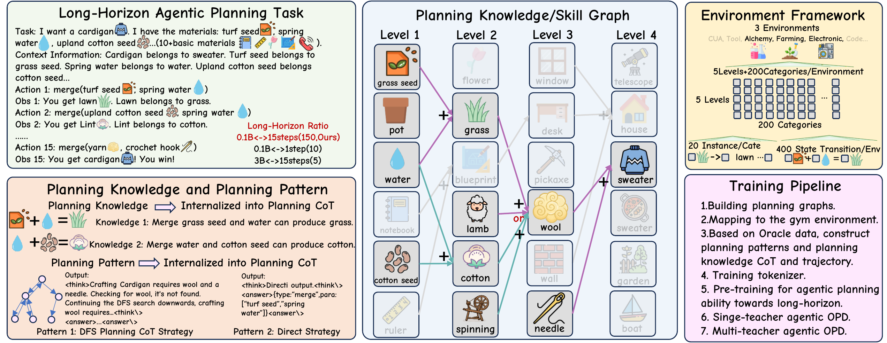
3environments
5planning levels
200categories / environment
400state transitions / environment
Evaluation. Every task is run independently K times in a multi-turn setting. Avg@K averages Pass@1 across the runs; Pass@K measures whether a task succeeds at least once.
Three training stages
Acquisition, shaping, and integration.
The same controlled environment follows planning ability from pre-training data, through GRPO and OPD shaping, to MOPD consolidation across multiple teachers.
01
Planning Ability Acquisition during Pre-training
Planning begins with an internal world model.
We separate acquisition into three controlled questions: how trajectories are represented, which horizons appear in the data, and whether those trajectories are reliable. Here, pre-training includes both pre-training and mid-training corpora in one unified mixture.
01.1 · Data format
Explicit state transitions teach a reusable world model.
We compare direct-answer training with chain-of-thought trajectories that expose the intermediate state after every action. Direct answering fits quickly, but reaches a lower ceiling as the test trajectory grows longer.
State-transition supervision asks the model to predict how the environment moves from the current state to the next state, not just the final action. The model performs depth-first search inside its chain of thought, composing atomic skill transitions into a reusable internal simulator.
FindingMaking the transition process observable is more valuable than optimizing only for short-path convergence.
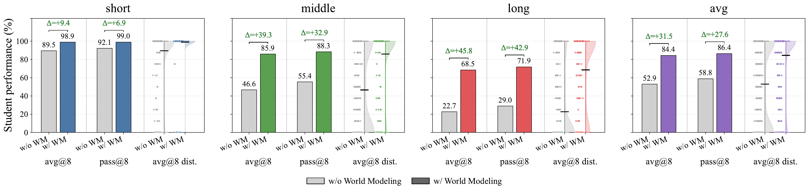
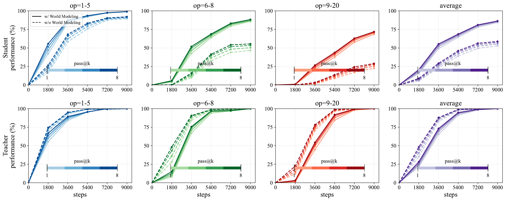
01.2 · Data distribution
Atomic skills do not automatically compose.
A model trained only on short tasks can master atomic operations yet fail to compose them: pass@8 reaches 93.12% on short-horizon tasks, but only 0.83% at the middle level and 0.00% on long-horizon tasks.
Minimal exposure activates composition. Adding only 5% middle-horizon trajectories raises middle pass@8 to 51.88%, while adding 5% long-horizon trajectories raises long-horizon pass@8 from 0.00% to 11.46%.
FindingCoverage of the composition rule matters more than filling the dataset with isolated primitives.
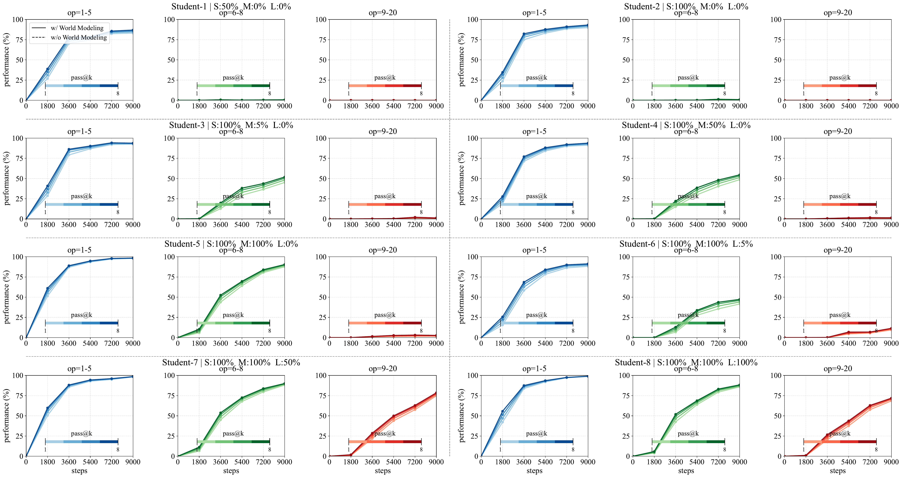
01.3 · Data quality
Long sequences amplify imperfect demonstrations.
Several different optimal templates preserve nearly the same generalization, showing that diversity among correct solutions is safe. Failure appears when suboptimal actions enter the training distribution.
With a 4:8 mixture of optimal and suboptimal trajectories, pass@8 falls to 66.0% on short tasks, 0.8% on middle tasks, and 0.0% on long tasks. Small step-level errors compound and corrupt every later decision.
FindingTrajectory correctness is structural: massive sampling cannot recover long-horizon success once suboptimal behavior is internalized.
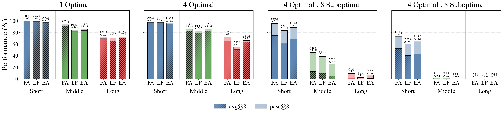
02
Planning Ability Shaping via GRPO and OPD Post-training
Planning patterns and knowledge require different signals.
We distinguish low-mutual-information behaviors shared across tasks from high-mutual-information procedures tied to an environment.
02.1 · Planning patterns
Dense teacher feedback extends the learnable boundary.
For general reasoning patterns, OPD remains effective under weaker pre-training and at longer horizons than outcome-reward GRPO. A sparse score covers a whole trajectory, so the useful direction becomes noisy or vanishes as decisions accumulate.
OPD compares student and teacher token by token on student-sampled states. The map has three regimes: SFT for high-information knowledge; RL for reusable low-information patterns; and a long-horizon region where sparse outcome rewards become unsupported.
Within the effective region, GRPO can retain more sampling diversity and a higher pass@k ceiling, while OPD mode-seeks the teacher pattern and reduces entropy. Even when post-training pass@k exceeds the base model at large k, this is not evidence that RL raised the model’s capability ceiling: long horizons can distort pass@k because correct trajectories may already exist in pre-training yet remain extremely unlikely to be sampled end to end.
MechanismFine-grained teacher logits stabilize local decisions, but teacher quality and student-teacher token overlap bound OPD's ceiling.
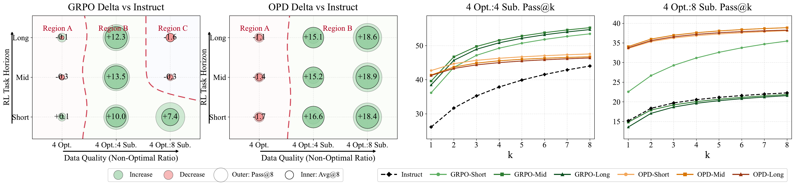
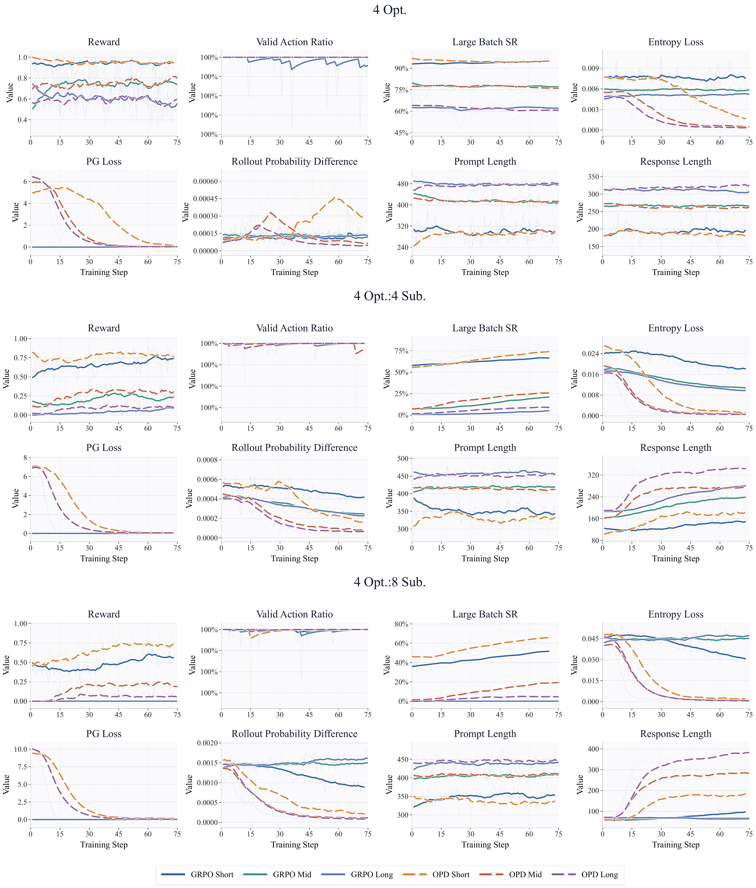
Gradient direction analysis
Long horizons make coarse GRPO updates noisy or cause them to vanish.
SVD analysis tracks whether intermediate gradients remain aligned with the final optimization subspace. GRPO is consistent only in restricted short-horizon, high-quality settings. As horizons and non-optimal actions increase, its directions diverge and some curves remain flat at zero. OPD preserves high principal-direction similarity across the evaluated regimes.
New resultCross-sample generalization depends on structurally aligned principal gradient directions; fine-grained credit assignment supplies that alignment.
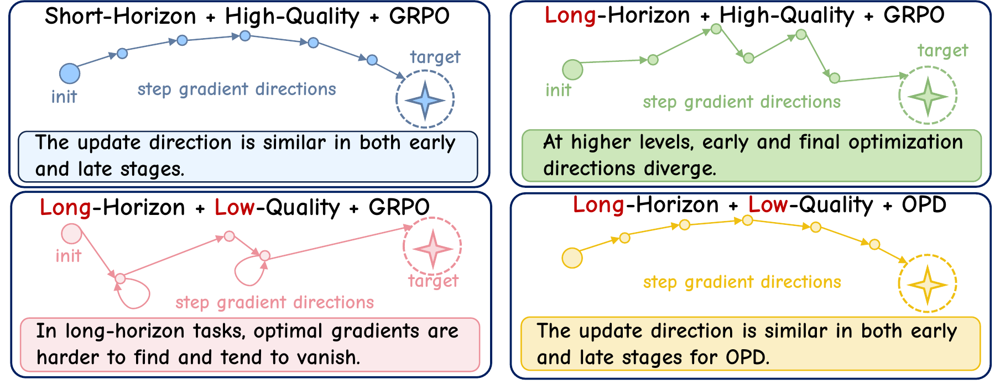

02.2 · Planning knowledge
Unseen procedures can overwrite the student’s world model.
We compare matched Student A with Teacher A against mismatched Student A with Teacher B. A compatible procedure strengthens the student; unseen multi-path knowledge causes a substantial collapse of in-distribution procedural knowledge while only mildly degrading OOD generalization.
The teacher may assign high KL loss to a valid alternative path, while small RL updates cannot install an entirely new sample-specific procedural system. High-information transfer therefore needs aligned world models, explicit knowledge injection, and error-state recovery data.
BoundaryImitation is unsafe when teacher and student disagree about how states evolve.
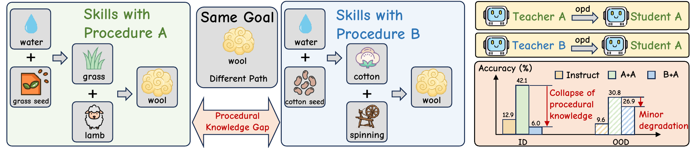
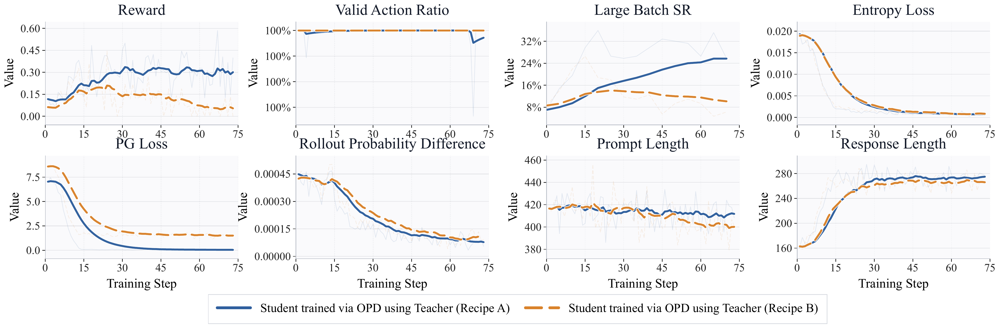
Token-level dynamics
OPD learns shared patterns early, then fails on mismatched knowledge late.
At early checkpoints, optimization primarily changes reusable planning-pattern tokens and rewards improve. Later, training reaches sample-specific procedural tokens: crossed teachers treat correct student tokens as wrong, KL remains elevated, and existing knowledge is overwritten before the new procedure is fully acquired.
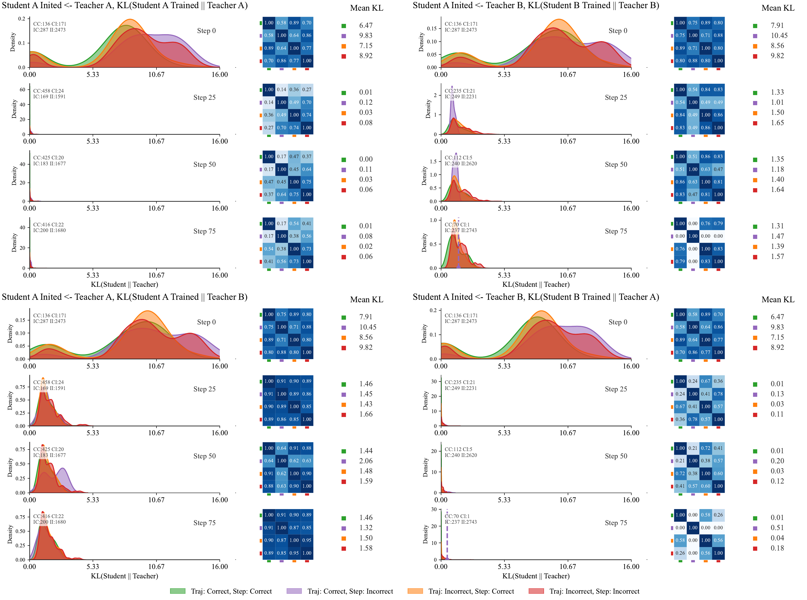
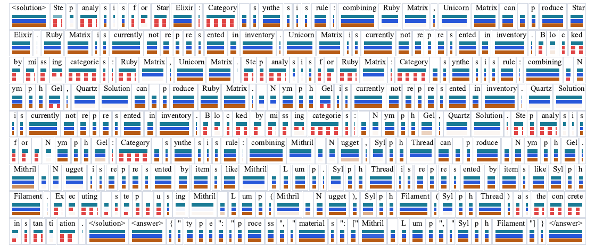
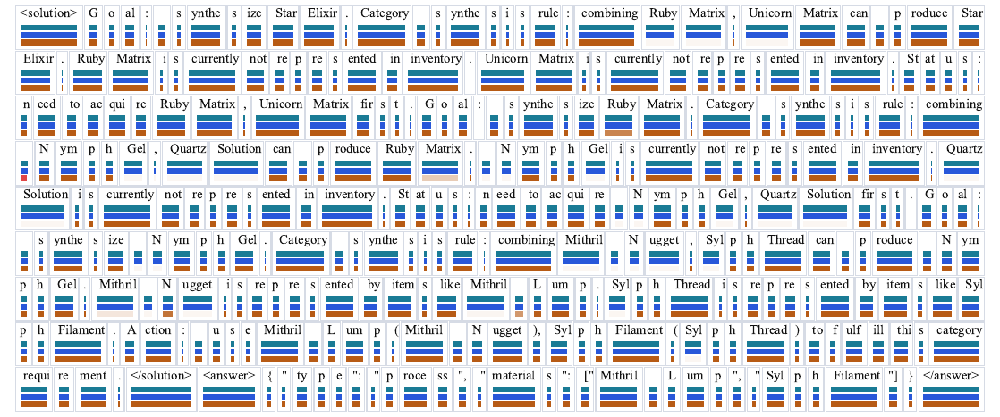
03
Planning Ability Integration through MOPD Post-training
Merging succeeds when experts expose shared structure.
MOPD merges specialists through the student’s state distribution. We organize merging by shared structure and whether teachers’ preferred actions are compatible.
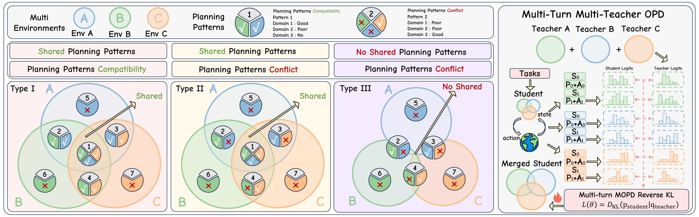
Shared + compatible
Transfer emerges across environments.
MOPD mode-seeks the teachers’ common distribution. The student generalizes a shared pattern when it already has support in the base policy.
Shared + conflicting
Common structure anchors continual learning.
Even when teacher preferences conflict, a usable shared pattern lets sequential distillation add new skills while preserving earlier domains.
Non-shared + conflicting
Interference becomes catastrophic forgetting.
With no common pattern, a new expert can erase the old domain. In Form d after EA, prior-domain performance falls from 90.00 to 15.62.
Merging dynamics
The curves show convergence when distributions overlap and divergence when they do not.
Compatible teachers concentrate probability on a common solution. Under conflict, the token distribution is pulled toward the latest specialist, tracking loss of the earlier capability.
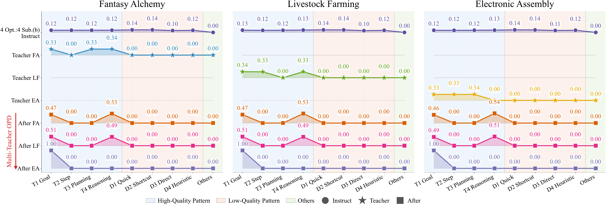
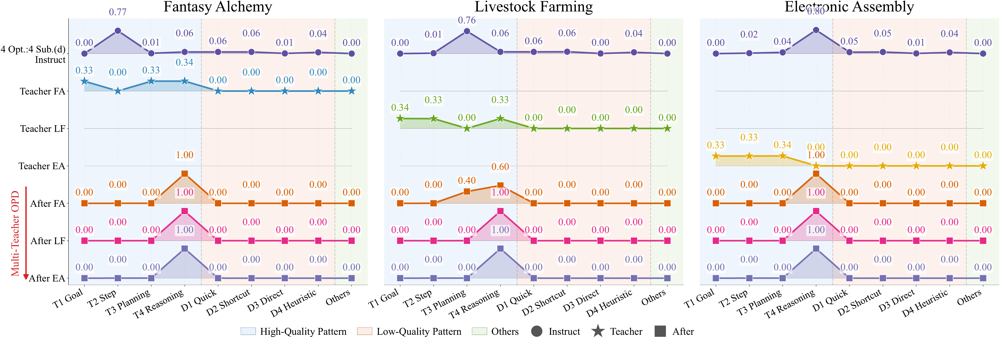
Parameter-space view
Useful merging is a small, structured movement rather than parameter averaging.
PCA shows that MOPD checkpoints remain close to the instruction-tuned initialization. Each teacher contributes a compact update direction while compatible components accumulate into a shared capability.
Compatible updates add task signals without destroying the base model; unaligned directions compete when no common structure constrains them. The same small-update property also explains why OPD cannot inject large-scale task-specific knowledge that is absent from pre-training.

Our goal
Our goal is to fundamentally strengthen the foundational capabilities of models for multi-turn long-horizon planning.
Citation
Use this work
The full manuscript and research artifacts are available through the links above.
@article{men2026planphys,
title={The Physics of Multi-Turn Long-Horizon Planning:
From Pre-training to Post-training via Single- and
Multi-Teacher On-Policy Agentic Distillation},
author={Men, Tianyi and Jin, Zhuoran and Liu, Kang and Zhao, Jun},
year={2026}
}